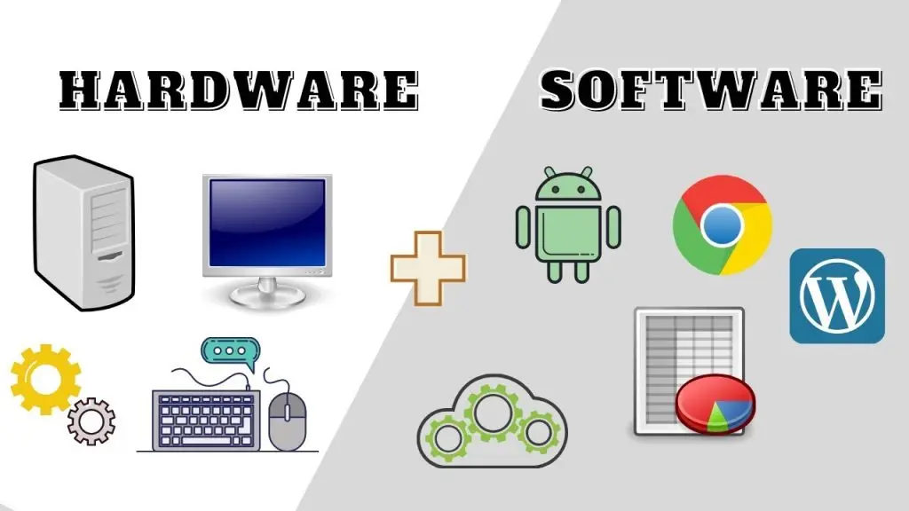
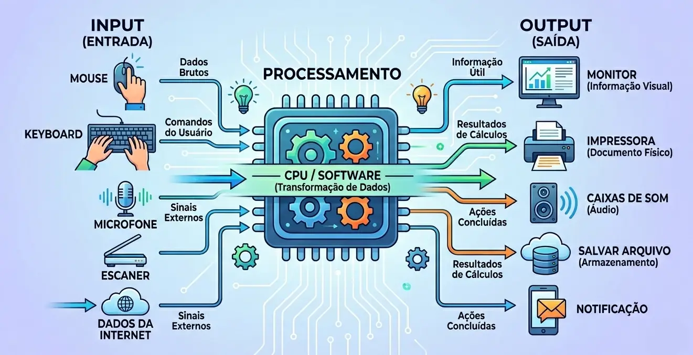

O hardware e a parte física do computador: monitor, teclado, mouse, processador, memória e disco. Tudo o que pode ser tocado faz parte do hardware.
O software e a parte lógica: sistemas operacionais, programas e aplicativos. Ele e formado por instruções que dizem ao hardware o que fazer.
Sem software, o hardware nao executa tarefas úteis. Sem hardware, o software nao tem onde funcionar. Por isso, os dois dependem um do outro para que o computador opere corretamente.

Input (entrada) e todo dado que enviamos para o computador. Exemplos comuns: teclado, mouse, microfone e câmera.
Output (saída) e a resposta que o computador devolve ao usuário. Exemplos: monitor, impressora, caixas de som e projetor.
Em uma tarefa simples, como digitar e imprimir um texto, usamos input para inserir informações e output para visualizar ou obter o resultado final.